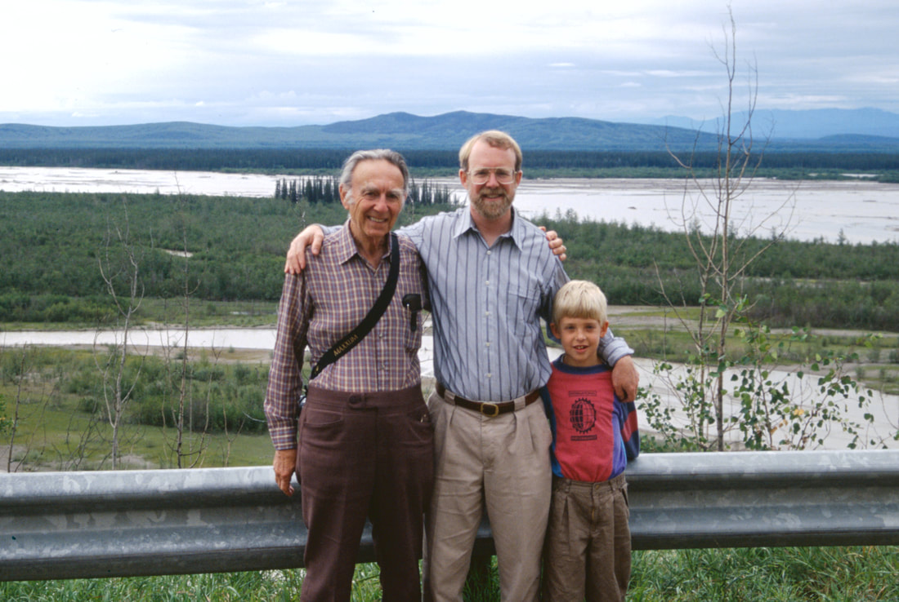
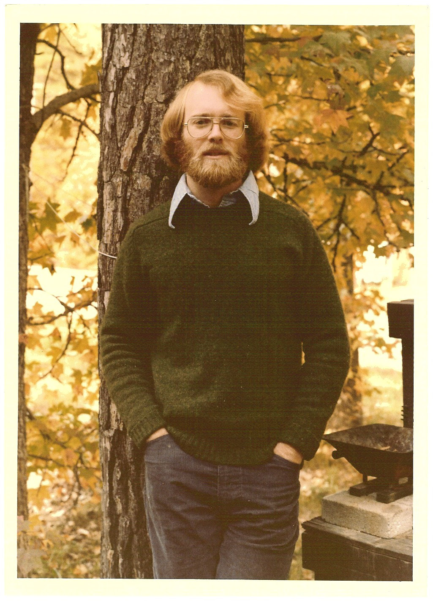
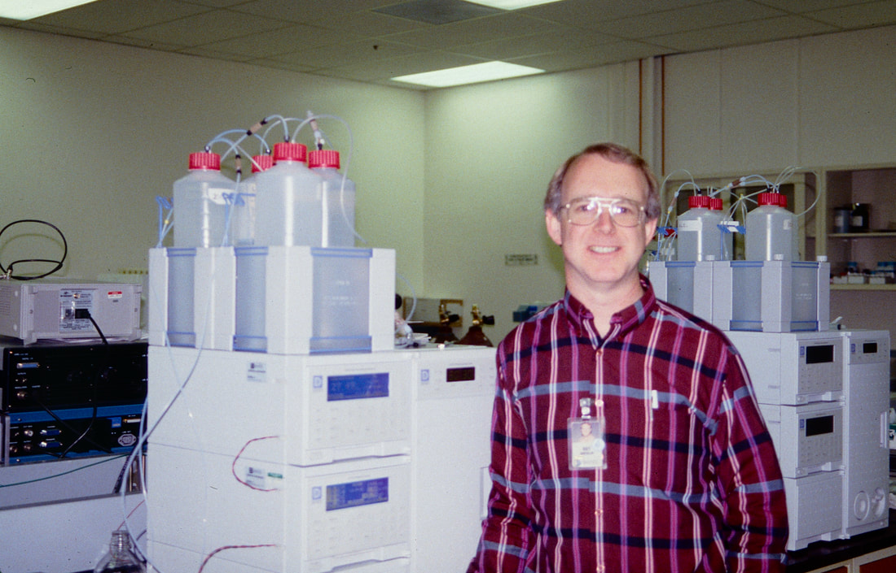
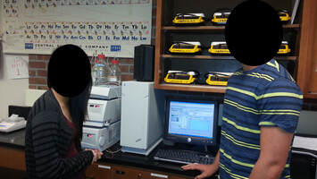
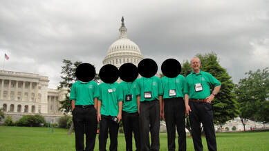
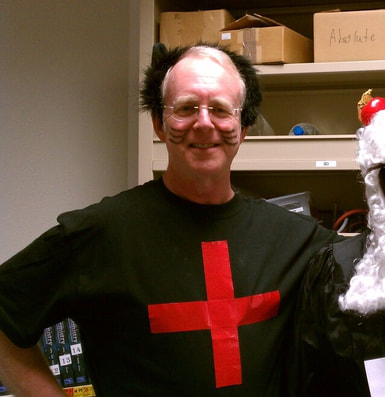
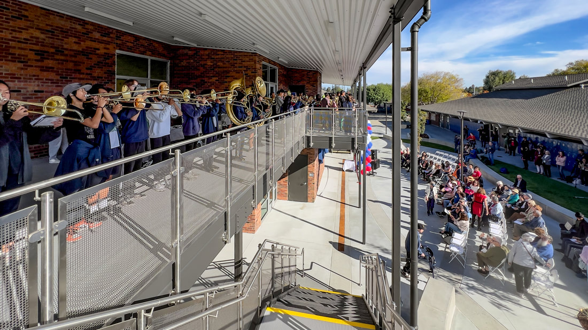
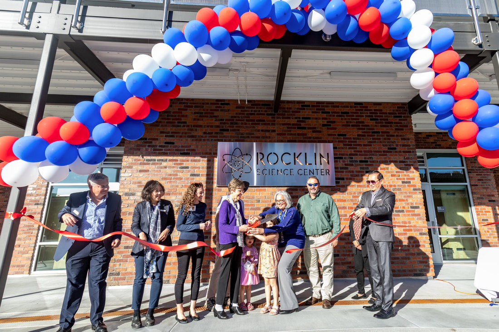

Roy David Rocklin 1953-2023
11/5/2023

My father Roy David Rocklin died on March 19th, 2023. He was 69. Over his life he was a research scientist, a teacher, and a politician as well as a father, grandfather, brother, husband, and dear family member to our entire extended family. I wanted to write a few things about him.
Dad was born August 3rd 1953 in San Francisco. This is recorded in the massive family tree that he constructed and took great pride in. On Dad's mother's side, the family tree spans at least eight generations: from Icek and Liba Furcajgier (born in 1787 and 1799 in Opatow, Poland) to my daughters born in 2017 and 2019. Dad located a copy of Icek's death certificate (d. 1855 in Opatow) along with scores of other birth, death, and marriage certificates. Thanks to Dad's records, I learned that my great-grandfather Harry (great-grandson of Icek and Liba) married my great-grandmother in Chicago in 1908, during a stay away from their home in Toronto. Harry (born 1886 in Opatow) and several of his siblings were the first generation to come to North America.
My family saw Fiddler on the Roof many times when we were children. At the end, the Jewish villagers are evicted from their village (the only home they've known) by the Tsar. It's a sad moment. I remember Dad telling me that (in retrospect) this was actually a happy ending; leaving their village for America was the best thing that ever happened to those people and their descendants (us).
Dad was born August 3rd 1953 in San Francisco. This is recorded in the massive family tree that he constructed and took great pride in. On Dad's mother's side, the family tree spans at least eight generations: from Icek and Liba Furcajgier (born in 1787 and 1799 in Opatow, Poland) to my daughters born in 2017 and 2019. Dad located a copy of Icek's death certificate (d. 1855 in Opatow) along with scores of other birth, death, and marriage certificates. Thanks to Dad's records, I learned that my great-grandfather Harry (great-grandson of Icek and Liba) married my great-grandmother in Chicago in 1908, during a stay away from their home in Toronto. Harry (born 1886 in Opatow) and several of his siblings were the first generation to come to North America.
My family saw Fiddler on the Roof many times when we were children. At the end, the Jewish villagers are evicted from their village (the only home they've known) by the Tsar. It's a sad moment. I remember Dad telling me that (in retrospect) this was actually a happy ending; leaving their village for America was the best thing that ever happened to those people and their descendants (us).


Dad was a scientist. He earned his Ph.D. in 1980 at UNC Chapel Hill with Royce Murray, with a thesis titled "The electrochemistry of porphyrins covalently bonded to carbon and platinum electrodes". He told me he went into electrochemistry because he always loved electronics. He tried to get me interested in electronics, but it never caught. He was a hardware guy and (thanks to him) I became a software guy. In 1994 he bought me my first programming book: the baseball-themed "QBASIC for Rookies". He said he chose it because he didn't think I was a Dummy.


Dad's Ph.D. work led directly to a job in Sunnyvale designing analytical instruments for Dionex. He worked at Dionex from 1980 until 1998 across numerous roles: R&D, engineering, marketing and sales. He told me he decided to leave Dionex because he "ran out of ideas." On the Saturday after he quit Dionex in 1998, the company paid him as a contractor to drive to Berkeley and troubleshoot an instrument in Carolyn Bertozzi's lab. They told him she was a very important professor. The visit stuck in his brain; he remembered her when I mentioned seeing her speak in 2006.
I remember him teaching me bits and pieces about his work when he would take me to Dionex on the occasional weekend. I saw the lab full of all kinds of instruments, although the most exciting thing was the huge Magic Eye poster on the wall. He would talk about the importance of good baselines for measuring peak intensities in chromatograms, and how their software often screwed up the baselines.
I remember him teaching me bits and pieces about his work when he would take me to Dionex on the occasional weekend. I saw the lab full of all kinds of instruments, although the most exciting thing was the huge Magic Eye poster on the wall. He would talk about the importance of good baselines for measuring peak intensities in chromatograms, and how their software often screwed up the baselines.


He was a great dad. Several memories stand out as inspirational. When Dad was a teenager, he loved playing the board game Diplomacy. When I was 14 he bought the game and told me he had been waiting my whole life until I was old enough to play. So we recruited five of my friends and played a full seven-player Diplomacy game with six 14-year-old boys and one 45-year-old dad. Dad played Italy. We loved it. Each game would be six or more hours, with Dad negotiating fragile alliances with one or another of my friends: "could you let me have Trieste if you get Vienna and Budapest? And we'll deal with Turkey next?". And then stabbing some of those friends in the back as well, to their dismay. We played many more times.
In the summer of 2001 my school Wind Ensemble took a two-week European tour, performing in Germany, Austria, Switzerland, and Luxembourg. Dad volunteered to chaperone the trip and I was happy to have him along. For over a year beforehand, Dad studied, took classes, and read to re-learn the German he had last studied decades earlier. He was ecstatic to speak German in central Europe. He also videotaped the entire trip. He took hours of footage, then spent a solid month editing it down to a near-professional two-hour movie (excerpt). He wasn't always a perfectionist, but he usually was. Watching the video now brings back incredible nostalgia: he captured the performances and also a broad group of high school friends finding ways to have fun. He found unique angles for filming. He filmed passers-by listening to rehearsal music coming from open windows. He used our creepier performance piece as background music for scenes of our tour busses making a harrowing drive up a windy mountain road. Each directorial choice was clearly intentional. He poured his energy into the video to meet his own standard of quality and to produce lasting memories for all the band members and families, including me.
Dad was very dedicated to preserving memories like this. In the last decade of his life he digitized thousands of prints and slides, often annotating them. He also digitized (from magnetic tape) all of my mom's piano recitals from when she was a student, before they'd met. He insisted that my mom's 1975 performance of Bach's D major Toccata (during her Master's studies) was the greatest version of the work he'd ever heard. He frequently harangued me to listen to that recording, right up to his last week. I think the last thing he said to me in person was the evening of February 25. He was listening to me practice Beethoven Op. 126 No. 5 (after a 20-year hiatus from the piano) and told me I should record it.
Toward the end of high school I spent more and more time at debate tournaments. Each March 2001-2003, it was practically every weekend: Thursday afternoon, Friday afternoon, all day Saturday. And all day the next Saturday. Dad was there as a volunteer judge for all of those tournaments. "Volunteer", but necessary so that I could compete. Everyone knew him: my teammates, the other coaches and other judges, and our competitor teams who debated in front of him again and again. He was dedicated, he was encouraging, he was proud, and he enjoyed it.
I was happy to be farther away from my parents for college. However, when I was choosing graduate schools, it happened that the best school for me was in San Francisco, just up the peninsula from my parents. In hindsight, this was extremely lucky. Many of my best memories with my dad come from these days. Soon after I moved to SF we saw Brahms's Symphony 2 at the SF Symphony. We saw the Borodin Quartet perform Shostakovich Quartets 7 and 8 and Beethoven Op. 59 No. 2 all in one concert. We saw the Orion Quartet perform Beethoven Op. 131 (just the two of us in Palo Alto for Dad's birthday). We saw the St. Lawrence Quartet perform Beethoven Op. 18 No. 4, Op. 127, and Op. 59 No. 1, Dad's favorite quartet. We saw Sergey Khachatryan play Bach's d minor Partita and the Kreutzer sonata, another of Dad's favorites. We saw Brahms' German Requiem, yet another of Dad's favorites. We went out to eat. We celebrated birthdays, my mom's recitals, and other holidays.
Music was incredibly important to my dad. His favorite symphony was Brahms's 4th, followed closely by Beethoven's Eroica. He met my mom through the Classical Music Lovers Exchange in 1982. Music finally became a way of bonding after I went to college. I'd send him a list of music in my collection and he'd encourage me to listen to something I was missing, like Prokofiev. In his last months I was encouraging him to listen to Sibelius symphonies during his dialysis sessions. He never took to Sibelius.
In 2013, my dad, mom, and I were driving back to the Bay Area after an apartment-hunting trip to Seattle. We were talking about music, and Dad mentioned that his all-time favorite piece of music was Ravel's Le Tombeau de Couperin. I was stunned. Having talked with him about music for years and thinking I knew his personality, I thought his favorite overall work was something by Beethoven, like Op. 101. But no— he favored a more sensitive, longing, whimsical, and ambiguous 20th century work over his favorite Beethoven. I saw my dad differently ever since. A few months later at Dad's 60th birthday (soon after his first cancer episode), my mom performed several movements from Le Tombeau de Couperin for him and the guests. It was a surprise. It was one of the most romantic things I'd ever seen.
After leaving Dionex in 1998, Dad worked at a series of companies before deciding he wanted to become a science teacher. He started teaching high school chemistry and physics in 2005, arriving at Lynbrook High School (a public school in San Jose) in 2006. His students called him Doc Rock and he loved to brag about his exceptional ones. Doc Rock traveled with many of them to the Science Bowl national championships in Washington, D.C.. He would also spend hours in the homework center each afternoon tutoring students who wanted extra help. He even got Dionex to donate an old HPLC/IC to Lynbrook so Doc Rock could teach an analytical chemistry lab. He had students create their own lemonade recipes and analyze the sugar and other ion concentrations. He had tremendous Lynbrook spirit and would dress as a Cat-ion for Halloween.
In the summer of 2001 my school Wind Ensemble took a two-week European tour, performing in Germany, Austria, Switzerland, and Luxembourg. Dad volunteered to chaperone the trip and I was happy to have him along. For over a year beforehand, Dad studied, took classes, and read to re-learn the German he had last studied decades earlier. He was ecstatic to speak German in central Europe. He also videotaped the entire trip. He took hours of footage, then spent a solid month editing it down to a near-professional two-hour movie (excerpt). He wasn't always a perfectionist, but he usually was. Watching the video now brings back incredible nostalgia: he captured the performances and also a broad group of high school friends finding ways to have fun. He found unique angles for filming. He filmed passers-by listening to rehearsal music coming from open windows. He used our creepier performance piece as background music for scenes of our tour busses making a harrowing drive up a windy mountain road. Each directorial choice was clearly intentional. He poured his energy into the video to meet his own standard of quality and to produce lasting memories for all the band members and families, including me.
Dad was very dedicated to preserving memories like this. In the last decade of his life he digitized thousands of prints and slides, often annotating them. He also digitized (from magnetic tape) all of my mom's piano recitals from when she was a student, before they'd met. He insisted that my mom's 1975 performance of Bach's D major Toccata (during her Master's studies) was the greatest version of the work he'd ever heard. He frequently harangued me to listen to that recording, right up to his last week. I think the last thing he said to me in person was the evening of February 25. He was listening to me practice Beethoven Op. 126 No. 5 (after a 20-year hiatus from the piano) and told me I should record it.
Toward the end of high school I spent more and more time at debate tournaments. Each March 2001-2003, it was practically every weekend: Thursday afternoon, Friday afternoon, all day Saturday. And all day the next Saturday. Dad was there as a volunteer judge for all of those tournaments. "Volunteer", but necessary so that I could compete. Everyone knew him: my teammates, the other coaches and other judges, and our competitor teams who debated in front of him again and again. He was dedicated, he was encouraging, he was proud, and he enjoyed it.
I was happy to be farther away from my parents for college. However, when I was choosing graduate schools, it happened that the best school for me was in San Francisco, just up the peninsula from my parents. In hindsight, this was extremely lucky. Many of my best memories with my dad come from these days. Soon after I moved to SF we saw Brahms's Symphony 2 at the SF Symphony. We saw the Borodin Quartet perform Shostakovich Quartets 7 and 8 and Beethoven Op. 59 No. 2 all in one concert. We saw the Orion Quartet perform Beethoven Op. 131 (just the two of us in Palo Alto for Dad's birthday). We saw the St. Lawrence Quartet perform Beethoven Op. 18 No. 4, Op. 127, and Op. 59 No. 1, Dad's favorite quartet. We saw Sergey Khachatryan play Bach's d minor Partita and the Kreutzer sonata, another of Dad's favorites. We saw Brahms' German Requiem, yet another of Dad's favorites. We went out to eat. We celebrated birthdays, my mom's recitals, and other holidays.
Music was incredibly important to my dad. His favorite symphony was Brahms's 4th, followed closely by Beethoven's Eroica. He met my mom through the Classical Music Lovers Exchange in 1982. Music finally became a way of bonding after I went to college. I'd send him a list of music in my collection and he'd encourage me to listen to something I was missing, like Prokofiev. In his last months I was encouraging him to listen to Sibelius symphonies during his dialysis sessions. He never took to Sibelius.
In 2013, my dad, mom, and I were driving back to the Bay Area after an apartment-hunting trip to Seattle. We were talking about music, and Dad mentioned that his all-time favorite piece of music was Ravel's Le Tombeau de Couperin. I was stunned. Having talked with him about music for years and thinking I knew his personality, I thought his favorite overall work was something by Beethoven, like Op. 101. But no— he favored a more sensitive, longing, whimsical, and ambiguous 20th century work over his favorite Beethoven. I saw my dad differently ever since. A few months later at Dad's 60th birthday (soon after his first cancer episode), my mom performed several movements from Le Tombeau de Couperin for him and the guests. It was a surprise. It was one of the most romantic things I'd ever seen.
After leaving Dionex in 1998, Dad worked at a series of companies before deciding he wanted to become a science teacher. He started teaching high school chemistry and physics in 2005, arriving at Lynbrook High School (a public school in San Jose) in 2006. His students called him Doc Rock and he loved to brag about his exceptional ones. Doc Rock traveled with many of them to the Science Bowl national championships in Washington, D.C.. He would also spend hours in the homework center each afternoon tutoring students who wanted extra help. He even got Dionex to donate an old HPLC/IC to Lynbrook so Doc Rock could teach an analytical chemistry lab. He had students create their own lemonade recipes and analyze the sugar and other ion concentrations. He had tremendous Lynbrook spirit and would dress as a Cat-ion for Halloween.






Dad became a politician for many reasons, but one strong motivator was his idealism: his powerful belief in making decisions for the common good based on reason and evidence, not fear. In 2015 while Dad was still teaching, his school district was considering leasing space near his school's athletic fields for cell phone towers. This generated loud opposition from many parents concerned about the safety of cell phone radio waves. Later that year, Lynbrook parents sued the school district alleging (among other things) that the existing cell phone towers atop the school gym produced dangerous radiation. These episodes exasperated Dad. He read every study he could find on the topic. And then he went to the school board himself to make the case - not specifically the case for cell phone towers, but the case for basing decisions on evidence, facts, logic, and science.
"The Verizon issue even brought out a Lynbrook High teacher to speak at the meeting. Roy Rocklin, a physics and science teacher argued that fear is not a good enough reason to deny the proposal.
“I'm not a Verizon customer. I'm here to support the idea that decisions should be made based on evidence, facts, logic and science. Evidence does not support the conclusion that cell phone towers pose a threat,” he told the board and audience. “At Lynbrook High School, we are proud of our students' commitment to science. Making a decision based on fear is a violation of fundamental principals [sic] we teach at Lynbrook High School.”
He also argued that other environmental factors are more harmful than waves coming from cell towers.
“Sunlight is far more dangerous than radio waves,” he said. “The energy of sunlight is about 1 million times greater than that of cell phone and radio waves, and the power level of sunlight is about 10,000 times greater.”
Rocklin's comments concluded with boos and jeers from many in the audience." (Santa Cruz Sentinel, May 6th 2015)
(Beyond the merits of the issue, Dad had a special fondness for radio--amateur radio was a long-time hobby of his.)
Dad decided to go beyond arguing before the school board - he decided to join it. After learning a board member was retiring in 2016, Dad sought - and won - the endorsements of all five board members for his own campaign. Dad campaigned on "supporting the education of all students, from the strongest students to those who need the most help." Along with his endorsements by the incumbents, he also touted the endorsement of my old band director John Burn - leader of our European tour fifteen years earlier. Dad earned 48,032 votes in 2016, the current all-time record for that office and substantially ahead of his challengers. He was reelected unopposed in 2020.
I loved talking to Dad about his work on the school board: how he approached controversies over attendance boundaries, his efforts to pass a parcel tax for additional funding, how the district became enmeshed in local controversies over city growth and development, how they handled Covid policy, controversies over police in schools, expulsions, and assigned readings (many of which he read himself), and even the insidery details of whether the five-member school board could continue to be elected "at large" or would be sued into establishing local boundaries for each school board seat. He involved himself in all of it. He would always listen sympathetically to any constituent or parent with an opinion, but he always made up his own mind.
Dad's final career in public service did have a precedent: as a graduate student, he had served as president of UNC's Graduate and Professional Student Federation. He waged a brutal campaign against UNC's (undergraduate-dominated) Campus Governing Council to regain control over student fees contributed by graduate and professional students. This ultimately led to a campus-wide referendum that ended in allegations of election fraud and a record 25 hours of testimony before the Student Supreme Court of the University of North Carolina. Dad won. One of the justices was UNC law student Roy Cooper, now Governor of North Carolina. If Dad ever remembered the name Roy Cooper and made this connection, he never told me.
I was in a MUNI station late at night in 2011 when Dad called me to tell me he had been diagnosed with stage 1 follicular lymphoma, grade 1 or 2. He was 57 and tried to be reassuring on the phone. At one point I remember him saying his doctor told him he should expect to live 5 to 10 more years. The chemotherapy he received from 2011-2013 put his lymphoma fully into remission, although his 60th birthday in 2013 was still very emotional. Almost five years after his diagnosis, he was a 62-year-old cancer survivor launching his first run for public office.
Dad's chemotherapy would eventually destroy his kidneys, and he began receiving dialysis three times per week in January 2022. This also coincided with a surprise heart surgery that kept him in the hospital for weeks. He would always call and report on his condition in the most matter-of-fact way - never scared exactly, but often touting the educational credentials of his doctors.
After only a few months adapting to his new dialysis routine, Dad called on April 1st, 2022 with much scarier news: he had been diagnosed with Merkel cell carcinoma, a rare aggressive skin cancer with a very poor prognosis. He always delivered bad news himself over the phone. Dad had required treatment for skin cancer many times before, but this was different. He would live just under one more year. He was still serving on the school board up to the very end, joining meetings by zoom when he couldn't attend in person.
Soon after Dad died, his school district asked my mom's permission to name Lynbrook's soon-to-open new science building after Dad. She and the rest of our family were tremendously honored. The Rocklin Science Center at Lynbrook High School was officially dedicated on October 27. It was a beautiful ceremony featuring Dad's past and present board colleagues, district and school officials, family and friends, and the Lynbrook Marching Viking Band.
"The Verizon issue even brought out a Lynbrook High teacher to speak at the meeting. Roy Rocklin, a physics and science teacher argued that fear is not a good enough reason to deny the proposal.
“I'm not a Verizon customer. I'm here to support the idea that decisions should be made based on evidence, facts, logic and science. Evidence does not support the conclusion that cell phone towers pose a threat,” he told the board and audience. “At Lynbrook High School, we are proud of our students' commitment to science. Making a decision based on fear is a violation of fundamental principals [sic] we teach at Lynbrook High School.”
He also argued that other environmental factors are more harmful than waves coming from cell towers.
“Sunlight is far more dangerous than radio waves,” he said. “The energy of sunlight is about 1 million times greater than that of cell phone and radio waves, and the power level of sunlight is about 10,000 times greater.”
Rocklin's comments concluded with boos and jeers from many in the audience." (Santa Cruz Sentinel, May 6th 2015)
(Beyond the merits of the issue, Dad had a special fondness for radio--amateur radio was a long-time hobby of his.)
Dad decided to go beyond arguing before the school board - he decided to join it. After learning a board member was retiring in 2016, Dad sought - and won - the endorsements of all five board members for his own campaign. Dad campaigned on "supporting the education of all students, from the strongest students to those who need the most help." Along with his endorsements by the incumbents, he also touted the endorsement of my old band director John Burn - leader of our European tour fifteen years earlier. Dad earned 48,032 votes in 2016, the current all-time record for that office and substantially ahead of his challengers. He was reelected unopposed in 2020.
I loved talking to Dad about his work on the school board: how he approached controversies over attendance boundaries, his efforts to pass a parcel tax for additional funding, how the district became enmeshed in local controversies over city growth and development, how they handled Covid policy, controversies over police in schools, expulsions, and assigned readings (many of which he read himself), and even the insidery details of whether the five-member school board could continue to be elected "at large" or would be sued into establishing local boundaries for each school board seat. He involved himself in all of it. He would always listen sympathetically to any constituent or parent with an opinion, but he always made up his own mind.
Dad's final career in public service did have a precedent: as a graduate student, he had served as president of UNC's Graduate and Professional Student Federation. He waged a brutal campaign against UNC's (undergraduate-dominated) Campus Governing Council to regain control over student fees contributed by graduate and professional students. This ultimately led to a campus-wide referendum that ended in allegations of election fraud and a record 25 hours of testimony before the Student Supreme Court of the University of North Carolina. Dad won. One of the justices was UNC law student Roy Cooper, now Governor of North Carolina. If Dad ever remembered the name Roy Cooper and made this connection, he never told me.
I was in a MUNI station late at night in 2011 when Dad called me to tell me he had been diagnosed with stage 1 follicular lymphoma, grade 1 or 2. He was 57 and tried to be reassuring on the phone. At one point I remember him saying his doctor told him he should expect to live 5 to 10 more years. The chemotherapy he received from 2011-2013 put his lymphoma fully into remission, although his 60th birthday in 2013 was still very emotional. Almost five years after his diagnosis, he was a 62-year-old cancer survivor launching his first run for public office.
Dad's chemotherapy would eventually destroy his kidneys, and he began receiving dialysis three times per week in January 2022. This also coincided with a surprise heart surgery that kept him in the hospital for weeks. He would always call and report on his condition in the most matter-of-fact way - never scared exactly, but often touting the educational credentials of his doctors.
After only a few months adapting to his new dialysis routine, Dad called on April 1st, 2022 with much scarier news: he had been diagnosed with Merkel cell carcinoma, a rare aggressive skin cancer with a very poor prognosis. He always delivered bad news himself over the phone. Dad had required treatment for skin cancer many times before, but this was different. He would live just under one more year. He was still serving on the school board up to the very end, joining meetings by zoom when he couldn't attend in person.
Soon after Dad died, his school district asked my mom's permission to name Lynbrook's soon-to-open new science building after Dad. She and the rest of our family were tremendously honored. The Rocklin Science Center at Lynbrook High School was officially dedicated on October 27. It was a beautiful ceremony featuring Dad's past and present board colleagues, district and school officials, family and friends, and the Lynbrook Marching Viking Band.




I wrote this to share some of the most memorable things about Dad, but so much is missing: how he loved becoming "Zaydie", how he would actually read the history books I'd recommend to him, how he'd always point out the planets in the night sky, how he arranged a year in advance to bring our whole family to the 2017 total solar eclipse in Salem Oregon (just like he had taken us to see the total eclipse in Hawaii in 1991), the creativity he put into designing the programs for my mom's students' recitals (including the famous "Butterfly Ballot" program of December 2000), the many conversations we had about national politics, his love of baseball, and so much more.
Roy Rocklin Obituary on Legacy.com
Dad's reviews on RateMyTeachers.com, 2007-2013
Fremont Union High School District AVID Scholarship Program
Roy Rocklin Obituary on Legacy.com
Dad's reviews on RateMyTeachers.com, 2007-2013
Fremont Union High School District AVID Scholarship Program
Comments
Archived from the previous version of this site.
Such a loving tribute to the amazing man who was your Dad. Love mom
What an inspirational man. I know Gabe well but never met Roy. It's clear to me now how much he lives on through his son.
Thanks for sharing this. Dr. Rocklin was a great teacher and a kind man. It's been 10 years since I graduated and still think of him often. I'm very sorry for your loss. LHS '14
Gabe, what an incredible tribute and a beautiful way to honor your father—our dear neighbor and friend. I loved reading the stories you shared and reminiscing about Roy’s unwavering kindness and devotion to your family. He was immensely proud of you and Rachel, and I fondly remember how he supported you through your band and debate pursuits in high school (so many trips and so many boxes!). He loved that you shared his passion for music and was in awe of your groundbreaking work in science.
Roy always beamed with pride whenever he spoke about you, Rachel, or Marsha. His positivity and boyish curiosity never faded—whether he was perfecting the ultimate lemonade recipe or championing ways to improve education for all students. We miss him every day. Our thoughts remain with you and your family as we remember and honor him.
I was in 9th grade. My family was moving from the east coast to San Francisco where I would spend the next six years. At an after school Amateur Radio club meeting, a fellow member asked if he could have a ride home. It turns out I lived 2 streets over from him so I would gladly give him a ride. That person was Roy and we became best buddies. We spent the summer of 68 studying for our novice Amateur Radio license and practicing our Morse code. If the weather was warm enough, we hopped on our bicycles and headed for the public swimming pool where we would swim and say hi to the pretty girls.
I remember so many fun times. I had a small darkroom and showed Roy how to develop film and make photo prints. Before long, we had pooled our resources and put a darkroom together in his bedroom closet. Our new and improved enlarger was one built by his dad from spare parts (like father, like son). We were so funny. Instead of seeking out beautiful designs and natural beauty in our photos, we would take pictures of distant building with blinds in the windows and calculate what kind of resolution we were getting.
I noticed they had a grand piano and sat down one day and started playing popular tunes by ear. Roy was fascinated. The next thing I know, he was playing sonatas by Beethoven and challenged me to try it.
In all these areas, Roy always challenged me to go higher and further. Though he was a year younger than I, he naturally became a mentor.I found myself always wondering what Roy would do in certain circumstances.
He introduced me a girlfriend's sister in 1970. She became my first love. We were dating sisters. Yep, that was Roy and I.
My life took a drastic U-turn when my life kind of came apart and I ended up leaving the area and joining the Air Force. Roy's parents had moved to Houston, Texas and while I was in basically training, a sargent showed up at my barracks one Saturday and said I had visitors. My head was spinning. Who would be visiting me at Lackland Air Force Base in San Antonio, Texas? It turned out to be Roy, his sister Janet and his parents. We had a picnic lunch in the grass at the base. Very surreal but wonderful.
I lost touch for many years but Roy had been the best friend I ever had. Our lives went in very different directions. I became an atheist turned born-again Christian and moved to Seattle to attend Bible college. Yes very different.
In Nov 2017, Roy made a trip to Seattle and stopped by to visit. I took him down to see my parents. We had a great visit. The last time we were all together was probably 1972 in Walnut Creek, CA. He mentioned he had a bout with cancer. I was about to find out I had prostate cancer. We talked about old times. We looked at some old photos and talked about memories. I talked a little about how God had worked in my life to bring me to the place I was in my life. I don't know quite how that was received but My heart was in every word I said to my best buddy.
One day a couple of years ago, I was trying to remember the degrees Roy had and decided to Google him. The first thing that came up was his obituary. I was completely shocked. My buddy had died. I did some research and found out what happened and I believe I left a memorial.
Roy was a great guy. His family was like a second family to me in those glorious years in Walnut Creek. I will miss him. Thank you Gabriel for a wonderful memorial of your dad. I'll never forget him.